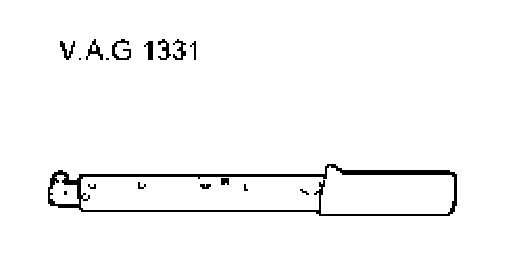
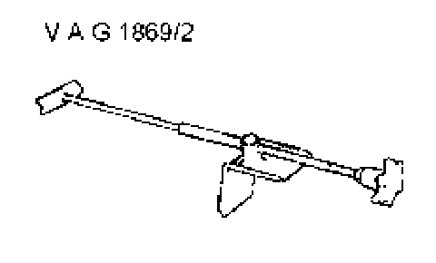
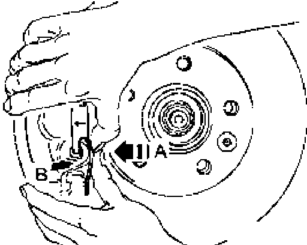
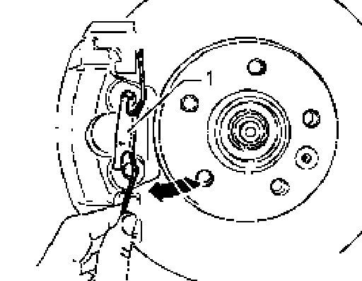
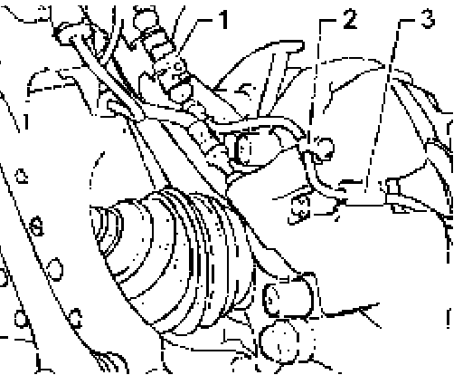
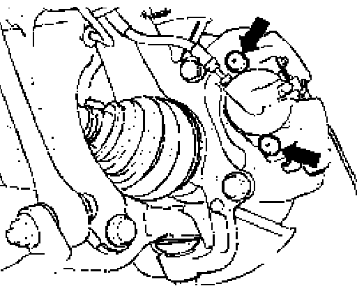
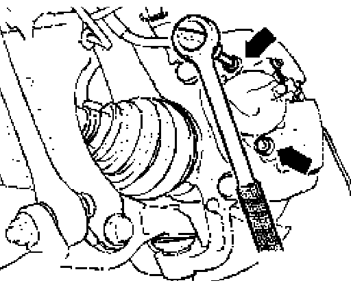
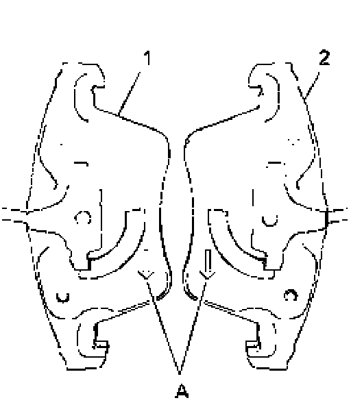
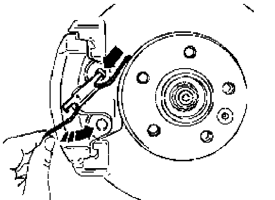
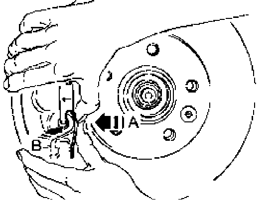

Brake Caliper, Removing and Installing
Brake caliper, removing and installing
Special tools, testers and auxiliary items required

^ Torque wrench V.A.G 1331

^ Brake pedal depressor VAG 1869/2
Removing
This work sequence is only necessary for replacing, or for after servicing, brake caliper.
- Remove wheels.

- Press the retaining spring in - direction of arrow A - until it can be pressed out of the bore in - direction of arrow B -

- Turn retaining spring - 1 - clockwise - arrow - until it can be removed from upper bore.

- Separate connector - 1 - for brake pad wear indicator.
- Remove dust cap - 2 - and lift off wire for brake pad wear indicator.
- Remove wire for brake pad wear indicator from retainer - 3 on caliper. Press bleeder bottle hose onto bleeder valve of brake caliper and then open bleeder valve.
- Install brake pedal loading device VAG 1869/2.
- Close bleeder valve and remove bleeder bottle.
- Disconnect brake line.

- Remove caps - arrows -.

- Remove both guide pins - arrows - from brake caliper.
- Remove brake caliper from carrier.
- Remove brake pads from brake caliper.
Installing
^ The piston is pushed back.
^ The outer brake pad sits on the carrier.
- Set inner brake pad with retaining springs into brake caliper (piston).
Note:
^ The inner (piston side) brake pads are directional and specific to each side of the vehicle. They are designated by markings that show direction of travel.

Directional brake pads
1 - Right piston side brake pad
2 - Left piston side brake pad
Note:
^ In installed position, the arrow - A - on the backing plate of the brake pad points down (in rotation direction of brake disc).
When installing brake caliper, be careful not to let the brake pad adhere itself to the brake caliper before the correct installed position has been achieved.
Do not damage adhesion surface.
- Attach brake caliper to carrier by fastening guide pins.
- Install both caps.
- Connect brake line to brake caliper.
- Remove brake pedal loading device V.A.G1869/2.

- Install retaining spring into upper bore - arrow - and turn down - direction of arrow -.
- Set retaining spring on bottom of carrier.

- First press the retaining spring in - direction of arrow A - then at the same time into the bore of brake caliper - direction of arrow B -.
- Bleed brake system go to Brake Bleeding
- Install wheels.
Tightening torque specification for wheel bolts
Wheel bolt to wheel hub: 160 Nm
Note:
^ After replacing brake pads, depress brake pedal firmly several times with vehicle stationary so that the brake pads are properly seated in their normal operating position.
^ Check brake fluid level.
Tightening torques:
Guide pins to carrier 30 Nm
Brake line to brake caliper 14 Nm